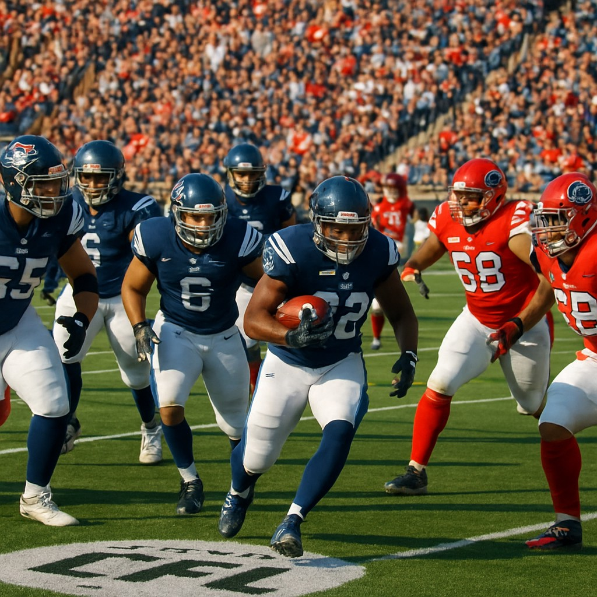

With the CFL season heating up, the Montreal Alouettes are set to face off against the Toronto Argonauts in a crucial matchup on June 13th. The betting market shows a clear preference for Montreal, with the Alouettes listed as -192 on the moneyline at Sports Select, while Toronto sits at +270. This game not only sets the stage for a potential playoff push but also offers an intriguing betting angle.
A Tale of Two Teams
Montreal enters this game with momentum, having recently displayed strong offensive execution and solid defensive play. Their ability to control the tempo and limit turnovers has been key to their success this season. In contrast, the Argonauts have struggled with consistency, particularly in red zone efficiency and special teams coverage.
The spread line at -6.5 points for Montreal suggests confidence in their ability to dominate the game. At -125 on the spread, Montreal is considered a strong favorite to cover this margin. Meanwhile, Toronto's +125 odds on the spread indicate they're being given a slight chance to compete, but the market isn't backing their ability to overcome the deficit.
Betting Recommendations
Given the current odds and the teams’ recent performances, the most compelling bet is the Montreal Alouettes -192 moneyline. The Alouettes' superior performance in recent weeks and their home-field advantage make them a safe pick to win outright. While the Argonauts are a capable team, the gap in form and performance metrics favors Montreal.
Additionally, for those seeking higher returns, the Toronto Argonauts +270 moneyline presents value if you believe in a dogfight scenario. However, the risk remains high, especially considering the spread line.
Key Factors to Watch
- Red-Zone Efficiency: Montreal’s offense has been efficient in the red zone, converting opportunities into touchdowns rather than settling for field goals.
- Turnover Margin: The Alouettes have maintained a positive turnover margin, which often correlates with wins in the CFL.
- Special Teams Play: Toronto's special teams have been inconsistent, which could be exploited by Montreal’s stronger coverage units.
This game is a prime example of how CFL betting can be both strategic and exciting. With Montreal favored across the board, a bet on the Alouettes to win outright offers solid value and a realistic path to victory.
In conclusion, while Toronto has shown flashes of brilliance, Montreal's overall performance and the betting lines suggest they’re the better bet in this contest.